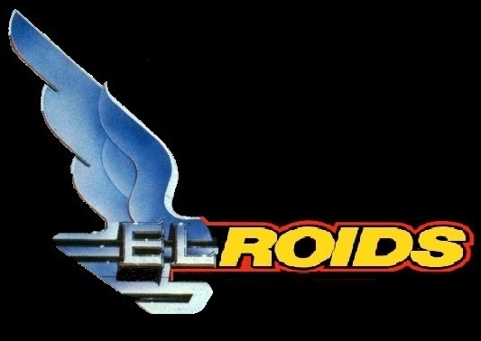

'Elroids' Developer Notes.
Source access
There is a, currently private, github repository here.
Alternatly it's all just script. You can 'inspect'/download the code from your browser.
There is also a facebook discussion group here. If
you want github access please join this and post a request to be added.
Known bugs
- Labels are in the foreground. If something passes between the viewer and a labeled object label will be
infront.
- Sometimes, e.g if rammed, can end up going faster than the maximum hull speed. Guess thats OK.
- Page hit counter not shown on firefox. This is because, for 'performance reasons', they dont support synch
XMLHttpRequests. Woould need to do xhr.open("GET", "/HitCounter", true) and then wait for response.
The 'Test Universe'
If the game is launched with parameter 'rockCount="0"' a 'Test Universe' is generated.
This contains a populated Universe and Ship with test versions of most things. Can be used for code testing.
Player ship is conveniently lined up for docking.
Ship will be loaded with some random cargo and have some random damge.
For notes on code operation/stucture see the Developer Code notes..
ToDos (In some sort of priority order)
V15.x Sort game balance.
Add 'narative'? Start docked? Maybe in a crap system.
V16.x Look at phone/tablet controls.
Abstract keyboard controls to Events (Roll left, Pause, etc.) rather than characters. Makes switch to other
UIs easier.
Make key assignments configurable.
Add joystick/tablet controls (maybe via on screen buttons reproducing keyboard keys). Maybe use tilt sensor
for movement.
V17.x Improve stations
Allow >1 ship to dock at the same time.
Add station aproach lights. Green - OK. Red - No docking. Yellow - Bad approach.
Add text display 'sign'.
Show visible 'sheild' (transparent sphere), sized length, if hit.
Bounce illegal ships at sheild ... not at docking.
V18.x Improve NPShips
Remove HP ... use regular damage to systems instead ... if NPShips become too tough multiply the damage by some
amount.
Less 'wild' navigation. Modify navigateThroughDest() to add lead. Possibly common code with attack().
Don't 'stop' when attacking. Makes attacker an easy target.
V19.x Add extra ship components.
- Thrusters (directional control)
- Hyperdrive. Reqd for hyperspace travel.
- Extra avionics including:
- Docking computer (Base on BasicAI.dock()). Then make docking more difficult.
- Missile lock HUD.
- Homing missile
- Proximity missiles (mainly for use by the bad guys).
- Shields.
- Improved terminal (but keep VT100 as default).
V20.x Fix game launch problems.
Add 'loading' screen.
Documentation.
Add screen shot with various display panels labled.
Add images (screen shots) of Items in place of game logo.
General 'good stuff' ... Post V20.0
Avoiding rocks were supposed to be a major part of this game. However it turns out that, in a 3D universe, the
chance of getting hit is pretty small. I am told this is the case in real asteroid fields ... Maybe do something
about it.
- Game mechanics:
- Improve 'vision through' wrap to take account of camera direction (i.e. dont just use
Universe.handleWrap()). i.e. allow rocks to be seen at full universe width not half.
- For ship/station interaction, once an rough aproximation to a collision is detected, it is
confirmed using ray tracing (Item.isPointInside()). Maybe extend to ray trace all the corners of
the Items bounding box.
- Carve the universe into 'cubes'. So don't have the square law issue of checking collisions
between everything and 'everthing else'. Just check the surrounding 9 cubes.
- Make radar zoomable.
- In flight ship repairs based on expenditure of, purchable, 'univeral shunt' modules (goods) rather than
credits.
Possibly add reputation increase for trading.
Add procedurally generated systems.
Possibly don't need extra 2D layer for lables ... make them part of HUD layer .. but I think we do.
Sort out menu system:
- Current code for buttons and scripts is ugly. Works in the context of MenuSystem, where it is evaled,
rather than it's own. Good enough for a 'minimum feature set' but needs a re-work.
- Currently buttons won't work on nested tables
- Re-work menu system as real HTML with style sheets to control look and feel. Back end to communicating
via HTTP with a, localy implemeneted in the client, 'HTML server'.
Possibly limit amount of goods available at stations.
- Maybe stations gradually 'grow' goods.
- Maybe station 'craft' goods from minerals delivered.
Try it with really big rocks.
Do something about the '/' problem on firefox.
Prettiness:
- Create 'exploding ship' animation. (Exploding Mesh? Then it could also do rocks/saucers etc.)
- Add surface texture to ship.
- Add lights to ships.
- Add extra vt100 features (e.g. block graphics) to ship control terminal.
- Fix audio to use THREE.PositionalAudio (Item.js.playSound()). I tried but cant get the listener to stay
stuck to the camera in all cases. Maybe add it to the Ship instead. Fell back on manually reducing volume
wih distance (and living without correct stereo).
- Make crater textures proceduraly generated (less download).
- Add 'tunnel' graphics when going through wormholes.
- Add mutiple 'suns' e.g. Tatooine.
Extensions:
- Test on platforms other than PC/Chrome.
- Move code under npm repository.
- Make it multi-player (AJAX?).
- Add optional gravity effects (like Gravitar).
- Add on line high score (credits) table?
- Maybe collision damage should be proportional to mass and relative speed of colliding object. Common for
all items apart from 'rock on rock' impacts.
- Revisit inline 'ToDos'.
- Add 'toxic' crates. Triibles, bombs, xenomorphs.